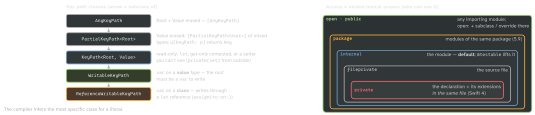

swift · folio
In one line: A key path (\User.name) is a typed, reusable,
uninvoked reference to a property — a class instance you apply with
x[keyPath: kp]; its class (read-only vs writable) is decided by what you may do
with the property. Access control is lexical: six levels, default internal,
and nothing may be exposed through something less visible than itself.
Download PDF Print view LaTeX source


Key paths
- Components:
\User.address.city; optional chaining\.address?.city(Value becomesString?); subscripts\[Int].[0]; identity\.self;kp.appending(path:). Key paths areHashable— usable as dictionary keys. - As functions (5.2, SE-0249):
users.map(\.name),filter(\.isActive). Only a key path literal converts; a storedlet kpneeds{ $0[keyPath: kp] }. @dynamicMemberLookupwith key paths (5.1, SE-0252):subscript<T>(dynamicMember kp: KeyPath<W, T>) -> Tforwards real members, type-checked (string-keyed lookup is not). SwiftUI:$model.nameisBinding’s dynamic member lookup over aWritableKeyPath.- Where you meet them:
ForEach(items, id: \.id),SortDescriptor/KeyPathComparator(\.name), KVOobserve(\.count)(needs@objc dynamic), Combineassign(to:on:).
Access rules
- No leaking: a declaration can’t be more visible than the types in its signature (
public func f(_: InternalType)is an error). Tuple/function types take the lowest level of their parts. - Member defaults: members of a
publictype areinternalunless marked; members of aprivate/fileprivatetype arefileprivate. Enum cases and protocol requirements take the enclosing level. - Setters:
public private(set) var count— read everywhere, write in the scope. - Inheritance: a subclass can’t be more visible than its superclass; an
overridemay widen access. openvspublic(classes only):public= use it outside the module;open= also subclass/override it there.final= nobody, anywhere — and lets the compiler call it directly (privatelets the optimiser inferfinal;finalis the guarantee).@testable import: tests seeinternal(build withENABLE_TESTABILITY, on in Debug), neverprivate/fileprivate.@inlinable: the body ships in the module interface so clients can inline and specialise it; it may use onlypublicor@usableFromInlinedeclarations.@usableFromInline internal= ABI-visible, source-invisible.- Swift 6 (SE-0409):
internal import X/private import Xkeep a dependency out of your module’s public interface.
Example
public struct User {
public let id: UUID
public private(set) var name: String // write: module only
var visits = 0 // internal
public init(id: UUID, name: String) { // memberwise is internal
self.id = id; self.name = name }
}
let ids = users.map(\.id) // literal -> function
let byName = users.sorted(using: KeyPathComparator(\.name))
@dynamicMemberLookup struct Box<W> {
var wrapped: W
subscript<T>(dynamicMember kp: WritableKeyPath<W, T>) -> T {
get { wrapped[keyPath: kp] }
set { wrapped[keyPath: kp] = newValue } } }
var box = Box(wrapped: user); box.visits += 1 // checkedTraps
- A
public structhas no public init: the memberwise init isinternal(lower still if a stored property isprivate). Clients can’t construct it until you writepublic init. \User.nameis aWritableKeyPathinside the module and a plainKeyPathoutside —private(set)decides. Key paths never bypass access.public classis not subclassable by clients — that isopen. Making anopenclasspublic/finallater breaks every client that subclassed it.assign(to: \.text, on: self)retainsself→ cycle whenselfholds theAnyCancellable. Useassign(to: &$prop)(iOS 14) orsink+[weak self].@inlinablecode is compiled into clients: a fix to its body reaches them only when they rebuild.fileprivateis only needed to share between different types in one file; same-type extensions in the file already seeprivate.
Remember
“Key path = a property as a value; its class = your rights.” Access: “O-P-P-I-F-P” — open, public, package, internal, fileprivate, private; public uses, open extends.